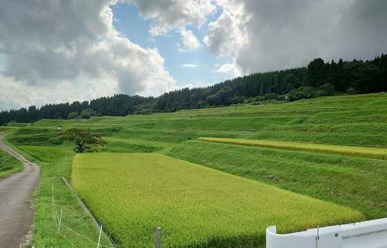
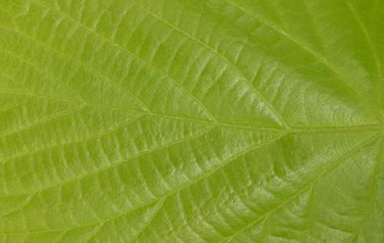

制作側のイメージ砺波の景色のそばで、
砺波の景色のそばで、
ひと息つく髪の時間。
富山県砺波市宮丸 美容室 Yuunn ユーン
お店について
Yuunn(ユーン)は、富山県砺波市宮丸にある美容室です。Instagramでは「砺波美容室/富山美容室」として紹介されています。
定休日は月曜日と第3日曜(不定休あり)と案内されています。ご予約はホットペッパービューティー経由のリンクがInstagramに掲載されています。
店名の意味やオーナーの理念・想いは、公開されている情報からは確認できませんでした。このページの「ひと息つく髪の時間」というコンセプトは、店名の響きと砺波の田園風景から制作側が思い描いたイメージで、お店の公式な理念ではありません。

口コミ
イメージ例以下は制作側が作成した例文で、実在のお客様の声ではありません。
イメージ例窓の外の緑を眺めているうちに、気持ちまで軽くなりました。
イメージ例話をよく聞いてもらえて、普段の手入れもしやすい長さに整えてもらえました。
イメージ例落ち着いた雰囲気で、ゆっくり過ごせる時間でした。